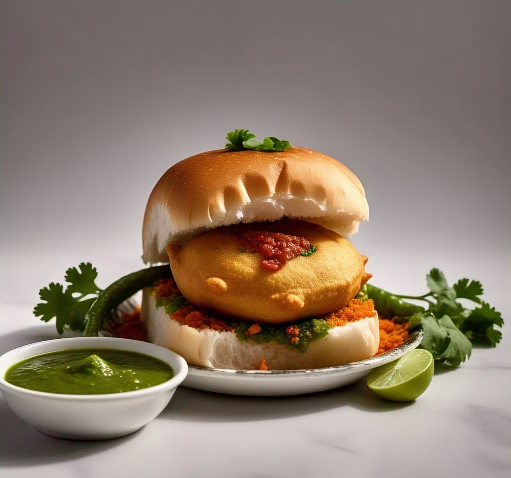
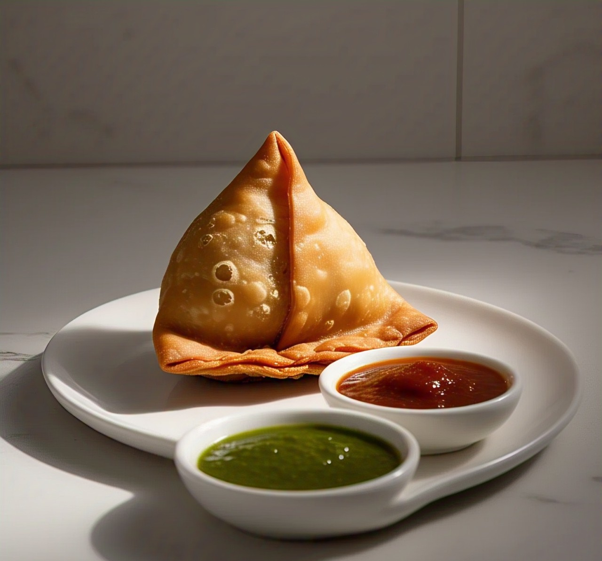

Enjoy the crispy delight of Vada Pav and Samosa
Vada Pav
Ingredients:
- 4 pav (bread rolls)
- 4 medium potatoes (boiled and mashed)
- 2 green chilies (chopped)
- 1 tbsp ginger-garlic paste
- 1/2 tsp turmeric powder
- 1/2 tsp mustard seeds
- 8-10 curry leaves
- 2 tbsp coriander leaves (chopped)
- Salt to taste
- Oil for frying
For Batter:
- 1 cup besan (gram flour)
- 1/2 tsp turmeric powder
- 1/2 tsp red chili powder
- Salt to taste
- Water (as needed for a thick batter)

Recipe:
- Heat oil, crackle mustard seeds, add curry leaves, green chilies, ginger-garlic paste, turmeric, and mashed potatoes. Mix well. Add salt and coriander.
- Make small balls from the potato mixture.
- Prepare a thick batter using besan, turmeric, chili powder, salt, and water.
- Dip the potato balls in the batter and deep fry till golden.
- Slice pav, apply chutney, place the vada inside, and enjoy!
Samosa
Ingredients:
- 2 cups all-purpose flour
- 1/4 cup ghee or oil
- 1/2 tsp salt
- Water as needed
- 3 potatoes (boiled and mashed)
- 1/2 cup green peas (boiled)
- 1 tsp cumin seeds
- 1 tsp garam masala
- 1 tsp red chili powder
- 1 tsp coriander powder
- 1/2 tsp dry mango powder
- 1 tbsp ginger (grated)
- Salt to taste
- Oil for deep frying

Recipe:
- Mix flour, ghee, and salt. Knead with water into a stiff dough and rest for 30 minutes.
- Heat oil, add cumin seeds and ginger. Sauté, then add mashed potatoes, peas, and all spices. Cook for 5 minutes.
- Roll out the dough, cut into halves, and shape into cones. Fill with stuffing and seal the edges.
- Deep fry on medium heat until golden brown. Serve hot with chutney.